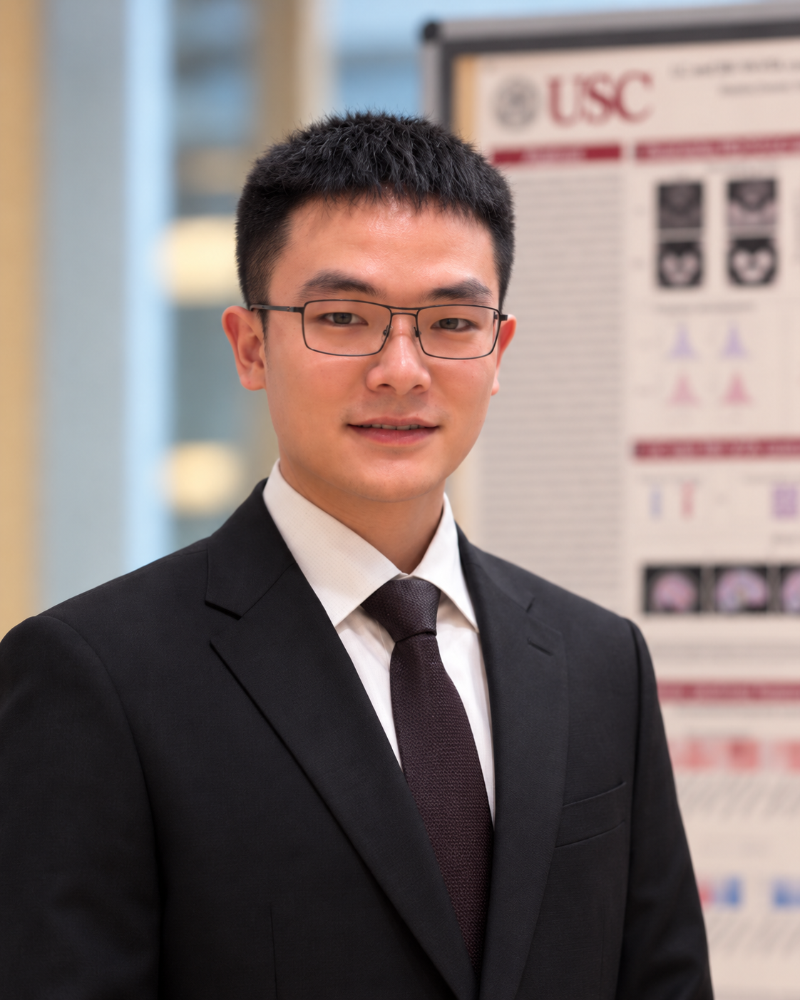

Neuromodulatory MRI
Quantifying locus coeruleus and SN–VTA MRI contrast and validating these measures against cognition, biomarkers, clinical progression, and neuropathology.
PhD Student in Gerontology
USC Leonard Davis School of Gerontology
I use longitudinal neuroimaging and statistical modeling to study brain changes associated with cognitive aging and Alzheimer’s disease. My research focuses on MRI markers of neuromodulatory systems, including the locus coeruleus and SN–VTA, their relationships with cognition and clinical progression, and the neural effects of cognitive training.

Quantifying locus coeruleus and SN–VTA MRI contrast and validating these measures against cognition, biomarkers, clinical progression, and neuropathology.
Studying why similar levels of Alzheimer’s disease pathology can be associated with different cognitive trajectories and clinical outcomes.
Applying multilevel modeling, multivariate neuroimaging, and reproducible statistical workflows to large longitudinal datasets.
Examining how repeated cognitive practice relates to changes in behavior, brain structure, and brain function across adulthood.
USC Leonard Davis School of Gerontology
Total award: $42,436.
2026–2027